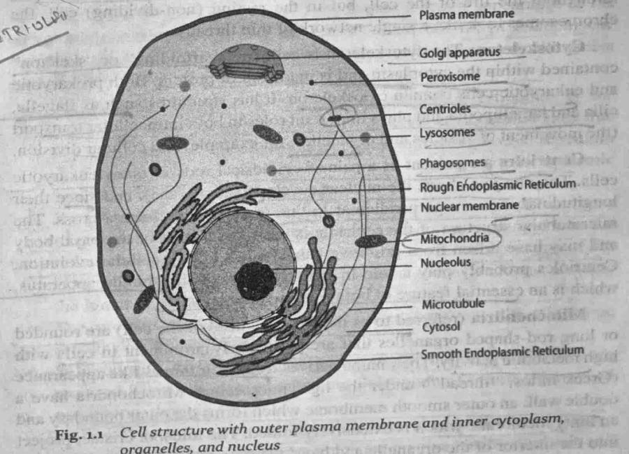
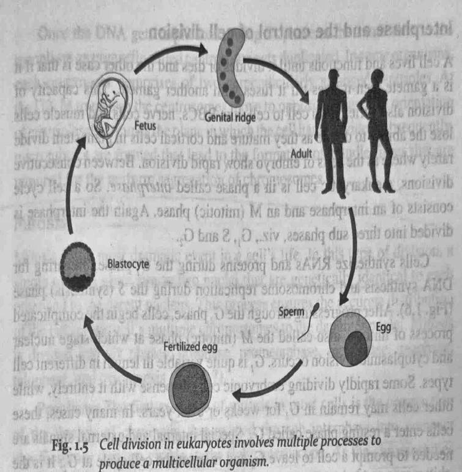
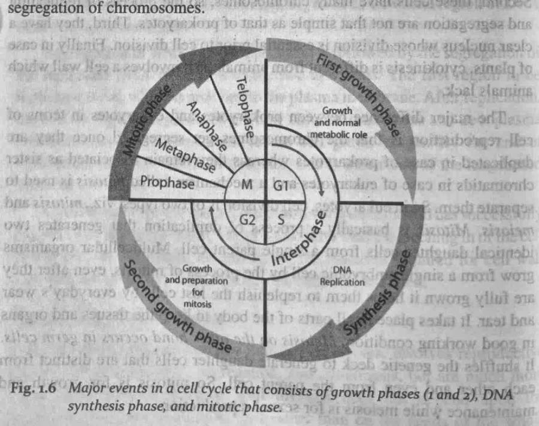
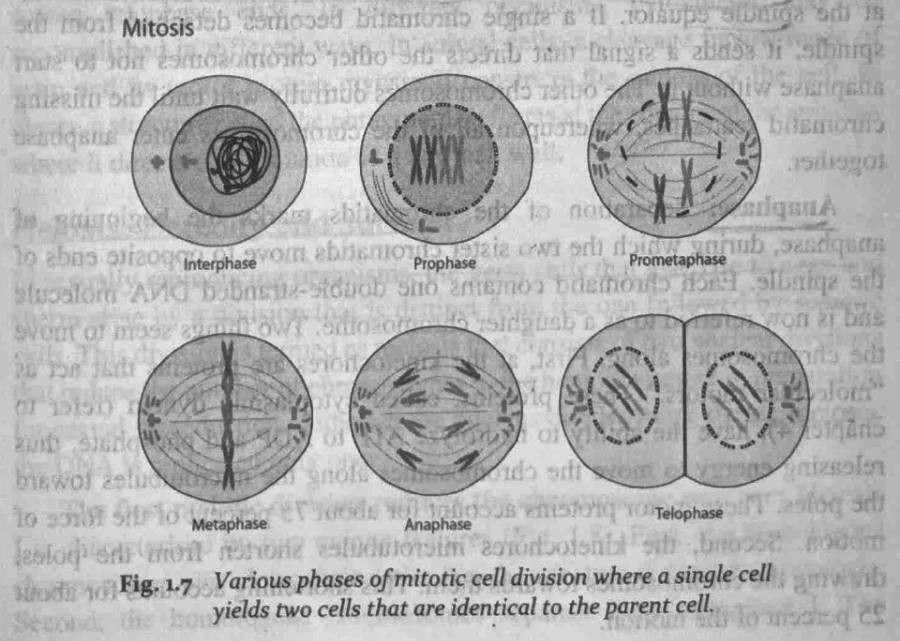
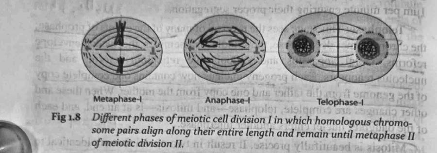
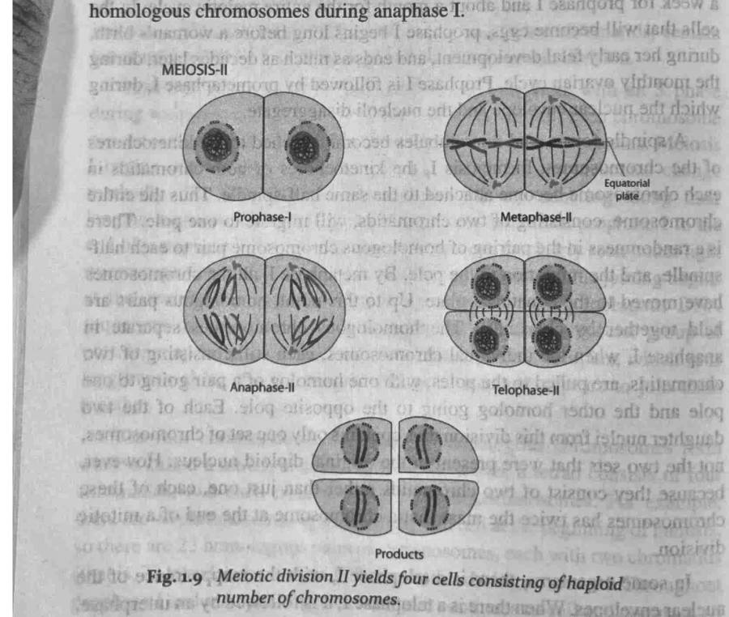
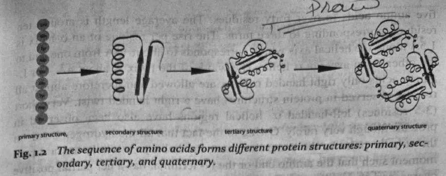
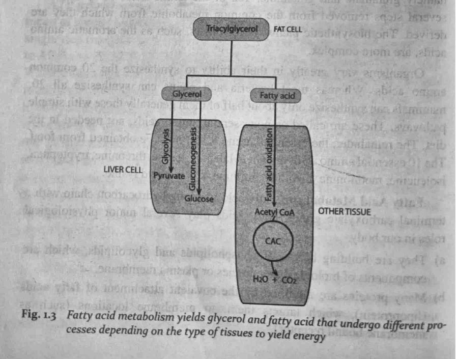
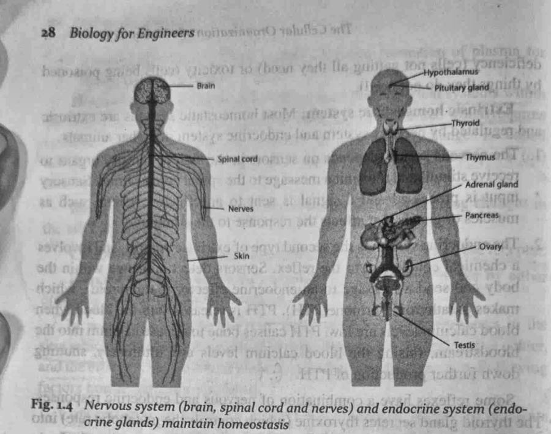

[01] Chapter 01 of 05 / fig. 01 / prokaryote to eukaryote
Cell Basics and Computing Analogies
The cell is the smallest working unit of life. Here we compare it to things you already know from computing.
6 sessionsCLA-1
S1
Cell theory and the differences between prokaryotic/eukaryotic organisms
2 marks
Cell theory states that all living things are made of cells, the cell is the basic unit of life, and every cell arises from a pre-existing cell.
4 to 5 marks
Write the definition, then any 4 or 5 of these points, one line each: 1.1 Biology as one of the fields of science; Testing the hypothesis rigorously by gathering new data; 1.2 Cell: basic unit of life; Multicellular organisms possess developing properties.
12 to 13 marks: answer in this order
1.1 Biology as one of the fields of science
Testing the hypothesis rigorously by gathering new data
Finish with a labelled diagram or table, one real example, one application and a one-line conclusion.
Practice questions
2 marks: State the three postulates of cell theory.
5 marks: Differentiate prokaryotic and eukaryotic cells (any five points).
12 marks: Explain cell theory and describe the structure of prokaryotic and eukaryotic cells with neat diagrams.
Complete notes
The Cellular Organization of a Living Organism Biology is a broad field of science focusing on the “study of life.” It covers a wide-range of subjects from cell biology that explains the workings of the cells to the study of ecosystems that govern the survival of the living organisms. Technological advances have made it possible to examine the contents of the cells, the organelles, in minute details to unraveling the contents of these organelles especially, the deoxyribonucleic acid (DNA) inside the nucleus. As long as there is an urge to lead a life without diseases and live longer with better quality, it is important to study biology because it provides clues to solving many of these problems. Understanding the nature of the cellular organelles and its functions provides basic information about the cell that can help us to devise strategies to correct the problems seen in this cellular machinery in diseases. Genetic information stored in the form of DNA in the chromosomes of the nucleus is not only important for propagation of species but also in the production of various proteins that is critical for the survival of an organism. Genes serve as blueprints for synthesis of proteins that have several functions in the body: provide structural support, regulate metabolism, and stimulate chemical reactions involved in anabolism and catabolism of biomolecules. Metabolism is a key process through which the living organism is able to generate energy for its sustenance. Plants get energy through photosynthesis using sunlight, water, and carbon dioxide while animals depend on external sources including plants. All the processes within the organism are carried out by maintaining equilibrium in order to adjust to the external environment. This process of homeostasis allows the organism to live under different climatic conditions and during healthy and diseased states. Reproduction is a key process for the propagation of living organisms and is done through both mitosis and meiosis involving cell division.
1.1 Biology as one of the fields of science
Science is an organized approach to a systematic study of the universe with the aim to increase our knowledge about the universe. Biology is one of the realms of science and its sole purpose is to understand the living organisms. A living organism is defined as a complex entity of physicochemical components that is capable of surviving through self-regulatory mechanisms such as metabolism, reproducing, and coping with the external environment. It also possesses the capabilities to move, respond to external and internal stimuli, grow and develop to adjust to the environment in which they live in.
Biologists believe in the concept of evolution which states that the present day living organisms have originated from ancestral forms of life which had undergone continuous modifications over a period of time. These concepts have been developed by Jean Baptiste Lamarck (1801) and later modified by Charles Darwin (1859). It also helped in the classification of living organisms into groups in such a manner that they are linked chronologically and morphologically. The branch of science dealing with classification organisms is called as taxonomy. A kingdom is the broadest classification in taxonomy and all living organisms belong to one of the 5 kingdoms (Table 1.1).
The five kingdoms are Monera, Protista, Fungi, Plantae, and Animalia. Living organisms are further classified into prokaryote and eukaryote based on the presence or absence of nucleus. Monera consists of unicellular organisms that lack a nucleus and many of the specialized cell parts, called organelles. Such organisms are said to be prokaryotic (pro “‘before”; karyotic “kernel,” “nucleus’”’) and consist of bacteria. All of the other kingdoms consist of eukaryotic (eu: “‘true’’) organisms, which have cells that contain a nucleus and a number of specialized organelles.
( Table 1.1 Classification of kingdoms with their characteristic ‘features
S.No. | Ki ingdom __| Characteristics Examples 1 Monera | Single-celled, prokaryotic, cells do not have Bacteria ______| nucleus and specialized organelles z Protista Single-celled, eukaryotic, cells possess Protozoa _____| nucleus and specialized organelles 3 Plantae Multicellular, eukaryotic, produce their own | Trees _| food for survival and reproduction
Single or multicellular, eukaryotic, acquire Yeasts and molds food from their surroundings
5 Animalia | Multicellular, eukaryotic, obtain food from Fishes, Birds, Repthe environment and Process it through meta- | tiles, Cows, Human bolic pathways for survival and reproduction | beings
Biologists have been able to classify the living organisms by investigating their characteristic features. This was accomplished by adopting rigorous
_scientific methods as a model of research developed by Francis Bacon (1561—
1626). It has the following sequences:
Recognizing the problem ~ Gathering data through experiments (measurement, observations, etc)
Analyzing the data for meaningful connections between various parameters chosen for study and any deviations
Formulating a hypothesis (a generalization), which is an educated guess that explains the existing data and suggests further avenues of investigation
Testing the hypothesis rigorously by gathering new data
6. Confirming, modifying, or rejecting the hypothesis in light of the new
Scientists have strict guidelines of doing research as postulated Bacon. Any procedure or data that do not conform to the ri and go wrong are discarded and the whole process is repeated some instances, errors have lead to new discoveries. ‘
Charles Goodyear accidently dropped a mixture of rubber and gultice
° Alexander Fleming found a contaminated mold growing in a baceea laboratory where he had a kept a chemical that later led to the. disco ety of X-rays. g ona hot stove and found the mixture to be flexible and Bees led to _ discovery of vulcanization process y culture on a petri dish. Any bacteriologist would have thrown aw: that petri dish because of contamination. But Fleming observed an area around the mold had no bacterial growth. He realized that this may have been due to the product produced by the mold. He isolated the chemical from the mold which happens to be penicillin, ‘the first antibiotic that revolutionized the treatment options for various bacterial
1.2 Cell: basic unit of life
All living beings are made up‘of the basic unit of life- cells (Fig: 1.1). Itis the smallest unit of living matter and each cell is able to carry out the processes of life. Some structures transport materials, some make food and others
| release energy for the cell to use. All the cells are involved in metabolic Processes through cellular respiration, reproduction (meiosis), and growth (mitosis). They are also capable of transforming into different types of cells, a specialization called as cell differentiation. The cells have a few things in common such as having cell membrane, deoxyribonucleic acid (DNA), cytoplasm, and ribosome but they are different with regard to structure, shape, and functions.
The cells were first described by Robert Hooke in 1665. He examined thin slices of cork and found pores. But his examination did not indicate any nucleus, and other organelles. Later in 1674, Antony van Leeuwenhoek found moving organisms by observing them under lenses and microscopes. The observation of Hooke and others led to the development of cell theory. The cell theory states
* All living things and organisms are made up of cells and their products. | Multicellular organisms (example: humans) are composed of many | cells while unicellular organisms (example: bacteria) are composed of only one cell. bee, ips s Cells are the basic building units of. life. |
They are the smallest structures capable of surviving on their own.
New cells arise from the pre-existing cells by division. i: 3° ee For example, new cells arise from cell division and ; a zygote (the very first cell formed when ; an organism is produced) arises from | the fusion of an egg cell and a sperm cell. ; i Evidence for the cell theory When scientists started to look at the structures of organisms under the microscope, they discovered that all living organisms where made up of these small units which they named them as cells. When these cells were taken from tissues they were able to survive for some period of time. Nothing smaller than the cell was able to live independently and so it was concluded that the cell was the smallest unit of life. For some time, scientists thought that cells must arise from non-living material but it was eventually proven that this was not the case, and instead proved to arise from preexisting cells.
A simple experiment to prove this can be done as follows:
Take two containers and put food in both of these
Sterilize both of the containers so that all living organisms are killed
Leave one of the containers open and seal the other closed
PRe KA Rows -
~ The idea is that the whole is greater than ¢ re will be growth of mold in the open h in the sealed container. The er, cells are able to enter the
One will be able to observe that the container whereas there will be no such growl reason for this is because in the open contain container from the external environment and start to divide and grow.
to the scaling on the other container no cells could enter and
However, du | that cells cannot arise from hence, no mold growth was observed proving non-living material.
Multicellular organisms are the product of development from simpler_to complex structures. For example: cells form tissues, tissues form organs, organs form organ systems and organ systems form multicellular organisms. he composition of its parts. For example your lungs are made of many cells, However, the cells by themselves aren’t much use. It is the many cells working as a unit that allow the lungs to perform their function.
Every cell in multicellular organisms contains all the genes of that organism. However, the genes that are activated vary from cell to cell. The reason we have different types of cells in our body (the cells in your eyes are not the same as the ones that make up your hair) is because different genes are activated in different cells. For example, the gene that produces keratin will be active in hair and nail cells. Keratin is the protein which makes up hair and nails. Genes encode for proteins and the proteins affect the cell’s structure and function so that the cell can specialize. This means cells develop in different ways. This is called differentiation. Differentiation depends on gene expression which is regulated mostly during transcription. It is an advantage for multicellular organisms as cells can differentiate to be more efficient unlike unicellular organisms that have to carry out all of the functions within that one cell.
These kinds of organisms do not have a nucleus, mitochondria or any other embrane-bound organelles. In other words, neither their DNA nor any other of their metabolic functions is collected together in a discrete_membrane enclosed area. Instead everything is openly accessible within the cell; though some bacteria have internal membranes as sites of metabolic activity, these membranes do not enclose a separate area of the cytoplasm.
The prokaryote cell is simpler and therefore smaller than a eukaryote cell. The prokaryotes do not have a nucleus and most other organelles of
| eukaryotes. There are two kinds of prokaryotes, bacteria. and archaea. Nuclear material of prokaryotic cell consists of a single chromosome. which is in direct contact with cytoplasm. Here the undefined nuclear region in the cytoplasm is called nucleiod. A prokaryotic cell has the following features:
. “On the outside, flagella and pili project from the cell’s surface. These are structures (not present in all prokaryotes) made of proteins that facilitate movement and communication between cells;
Enclosing the cell is the cell envelope consisting of a cell wall covering a plasma membrane though some bacteria also have a further covering layer called a capsule. The envelope gives rigidity to the cell and separates the inferior of the cell from its environment.
Prokaryotes can carry extra chromosomal DNA elements called
\ plasmids, which are usually circular. Plasmids enable additional
Ww X : flnctions, such as antibiotic resistance and therefore, survival.
Eukaryotic cells are about 15 times wider than a typical prokaryote and can be as much as 1000 times greater in volume. The major difference between prokaryotes and eukaryotes is that eukaryotic cells contain membrane-bound compartments in which specific metabolic activities take place. Most important among these isa cell nucleus, a membrane-delineated compartment that houses the eukaryotic c€Il’s DNA. This nucleus gives the eukaryote its name, which means “true nucleus.” Other differences include: :
The plasma membrane resembles that of prokaryotes in function, with minor differences in the setup. Cell wall may or may not be present.
The eukaryotic DNA is organized in one or more linear molecules, called chromosomes, which are associated with histone proteins. All chromosomal DNA is stored in the cell nucleus, separated from the cytoplasm by a membrane. Some eukaryotic organelles such as mitochondria also contain some DNA.
Many eukaryotic cells are ciliated with primary cilia. Primary cilia play important roles in chemo-sensation, mechano-sensation, and thermo-
Eukaryotes can move using motile cilia. The flagella are more complex than those of prokaryotes.
+ Plastids are a feature of most plant cells but are not found in the cells of animals. Vacuoles are quite prominent in plant cells, but are far less significant in or absent from animal cells. ~>
S2
Organelles as CPU components analogy
2 marks
Organelles are specialised structures inside a cell, each with a job: the nucleus acts like the CPU, mitochondria like the power supply and ribosomes like assembly workers.
4 to 5 marks
Write the definition, then any 4 or 5 of these points, one line each: 1.3 Cell structure and function; Cell/plasma membrane; Nucleus and Nucleolus; Cytoskeleton; Golgi apparatus/bodies.
12 to 13 marks: answer in this order
1.3 Cell structure and function
Cell/plasma membrane
Nucleus and Nucleolus
Cytoskeleton
Golgi apparatus/bodies
Finish with a labelled diagram or table, one real example, one application and a one-line conclusion.
Practice questions
2 marks: State the function of mitochondria.
5 marks: Compare the cell with a CPU using any five organelles.
12 marks: Describe the structure and functions of the major cell organelles with a labelled diagram and computing analogies.
Complete notes
1.3 Cell structure and function
Earlier before the advent of electron microscope, cell was described as a unit possessing a limiting outer membrane and an inner central nucleus surrounded by large mass of cytoplasm (Fig. 1.1). Staining of cells facilitated to . aS . pemeatrnan, Me ei oc nonmaa identification of subcellular features such as chromosome and nucleolus. of the nucleus. Electron microscopic studies made it possible for the elucidation of the subcellular structures called as organelles that perform specialized functions. Most of the organelles are derived from membranes but some of them do_ not possess membrane structure such as tibosomes, microtubules, and microfilaments, flagella, cilia, and centrioles.
Cell/plasma membrane: The outermost layer of the living cell that gives structure and shape is the cell membrane. The chief function is to regulate the passage of materials into and out of the cell. Initial structural studies using electron microscope revealed that it consists of inner and outer dense protein layer enclosing a less dense phospholipid layer. Channels were also observed to traverse the through exterior surface of the membrane. Recent studies by Singer and Nicholson have demonstrated that the cell membrane has fluid

mosaic model which better explains the dynamic nature of the proteins in the cell membrane. The only difference in the proposed model was the arrangement of phospholipids: their polar ends facing the inner_and outer surfaces and the hydrophobic, non-polar ends opposed at the center of the “Dilayer. nen
Nucleus and Nucleolus: The nucleus is a round or oval body lying in the center of the cell enclosed by a double membrane that is called as nuclear membrane or envelope. In certain regions of the nuclear envelope, ‘these membranes join together and there may be pores in these areas. The ‘pores serve 88 a direct passage route for the substances tg leave the nucleus. The outer membrane of the nuclear envelope is continuous with the endoplasmic reticulum and thus, may facilitate passage of materials from the nucleus directly into the channels of endoplasmic reticulum. Within the nucleus, one or more nucleoli may be seen. These are dense bodies containing the subunits for the ribosomes, the cytoplasmic organelles involved in the synthesis of j protein. The nucleolus is involved in the assembly and synthesis of ribosomes. “The nucleus is the storehouse of the genetic material called as chromosomes. Each chromosome exists as a tiny individual rod or string throughout the life of the cell, but in the resting (non-dividing) cell, the chromesemes took tike-a single-network of thin threads.
Cytoskeleton: The cytoskeleton is cellular “scaffolding” _or “skeleton” contained within the cytoplasm and is made out of protein. Both prokaryotic and eukaryotic cetis contain cytoskeleton. It has structures such as flagella, cilia 4nc+tamellipodia and plays important roles in both intracellular transport [! (thé movement of Vesicles and organelles, for example) and cellular division.
Centrioles are present as a pair of cylindrical rods in many eukaryotic cells. They Tie just above the nuclear envelope (membrane), and since their longitudinal axes are perpendicular to one another, they_ferm-a cross. The microtubular structure of the centriole is the same as that of the basal body anid may have arisen from primitive basal bodies during cellular evolution. Centrioles probably play a role in the formation of the spindle apparatus, which is an essential feature of both mitosis and meiosis.
Mitochondria (referred to as the ‘Powerhouse’ of the cell) are rounded or long rod-shaped organélles that are particularly prominent in cells with high metabolic activity. Their name derives from their thread-like appearance (Greek mitos, “thread’”’) under the light microscope. Mitochondria have a double wall: an outer smooth membrane which forms the outer boundary and aninner membrane which is extensively folded. The folds, or cristae, project into the interior of the organelle and have a variety of enzymes embedded in them. These cozymes are involved in the systematic degradation_of organic iifolecules to yield energy for the cell. They are responsible for the breakdown of sugar molecules to release ATP (adenosine triphosphate), which is used to transport energy within the cell for n metabolism. (through citric acid cycle and eleciron transport chain as explained in chapter 3). Like the chloroplasts of plants, the mitochondria contain their own DNA and ribosomes; they replicate independently of the rest of the’cell and appear to control the synthesis of their membranes. __. “i y
Endoplasmic reticulum (ER) is a series of membranous channels that traverse the cytoplasm of most eukaryotic cells. It forms a continuous network of the cell, itmay appear as a series of flattened disks or sacs. The endoplasmic retivujum Serves many general functions, including the facilitation of protein folding and the transport of synthesized proteins in sacs called cisternae. Only properly-folded proteins are transported from the rough ER to the Golgi _ complex. Boer
\Un-many parts of the cell, the endoplasmic reticulum is associated with e small dense granules lying along the outer border of its membrane. These structures are known as ribosomes. They impart a rough appearance to the endoplasmic reticulum, so that the ER is called the rough endoplasmic reticulum (RER) in these regions, which are usually associated with active protein synthesis.
_ ¢ The primary function of the rough endoplasmic reticulum is the ~ production and processing of specific proteins at ribosomal sites that are later exported. The ribosomes in the rough endoplasmic reticulum synthesize proteins which are then sent in to the rough endoplasmic reticulum for advanced processing.
Rough endoplasmic reticulum function involves creation of two types of proteins. One is the type which fortifies and gets embedded into the reticulum membrane. The other types are water-soluble proteins which after production at ribosomal sites, pass through the membrane and into the lumen.
The proteins that enter are further folded inside by the chaperone proteins present in the lumen.
Subsequently, these proteins are transported to the sites where they are required. They may also be sent to the Golgi bodies for further advanced processing, through vesicles. m1
The smooth endoplasmic reticulum (SER) does not contain any ribosomes and is associated with cellular regions which are involved in the synthesis and transport of lipids or the detoxification of a variety Seve 9 endoplasmic reticulum is found ina variety of cell types anc aoenireta functions in each, It consists of tubules and vesicles that branc! sail! “in network. The network of smooth endoplasmic reticulum Se . stirface area for the action or storage of key enzymes and the products o these enzymes, , | z
Ribosomes are the components of cells that make proteins from the amino acids. Ribosomes are the workhorses_of protein icauather*: process of translating messenger ribonucleic acid sey eee “central dogma” of biology is that DNA is used tomake RNA, whi¢h,in turn, is used to make protein (discussed in detail in Chapter yas aa Oe in genes is copied Ctranscription) into an mRNA. Ribosomes then read { le ifformation in this RNA and use it to create proteins. This process is known as! translation; i.e., the ribosome “translates” the genetic information From
‘A into proteins. Ribosomes do this by binding to an mRNA and using it asa template for the correct sequence of amino acids in a particular protein. The amino acids are attached to transfer RNA (tRNA) molecules, which enter one part of the ribosome and bind to the messenger RNA sequence. The attached amino acids are then joined together by another part of the ribosome. The ribosome moves along the mRNA, “reading” its sequence and producing a chain of amino acids.
Ribosomes are made from complexes of RNAs and proteins. Ribosomes are divided into two subunits, one larger and another smaller subunit. The sifialler subunit binds to the mRNA, while the larger subunit binds to the tRNA and the amino acids. When a ribosome finishes reading an mRNA, these two subunits split apart. Ribosomes have been classified as ribozymes, since the ribosomal. RNA seems to be most important for the peptidyl transferase activity that links amino acids together.
Golgi apparatus/bodies: They exist as stacks of flattened sacs, or vesicles tat are continuous with the “channels of the smooth endoplasmic reticulum. Their major function is the storage, modification, and packing of materials for release outside the cell membrane. These organelles are particufar ty prominent in secretory cells such as those of the pancreas. The outer-portion Of The Golgi apparatus releases its secretory material within membrane enclosed globules (seqretory vesicles) that Mise of the cell. The Golgi apparatus may actually be part of ; a dynamic sysienrof membranous channels within the cell in which all elements such as the nuclear envelope, the endoplasmic reticulum, the Golgi apparatus, and the cell meffibrane are connected to each other without sharp boui indaries. This pptereonmiceted network facilitates transport of materials across the cell. ~
Lysosomes are similar in shape to mitochondria_but_are_ smaller and_, consist of a single membrane covering the structure. They contain powerful enzymes that would digest the cellular contents if they were not contained svithin the impermeable Tysosomal membrane. Rupture of this membrane releases these enzymes. The lysosome plays a role in intracellular digestion and may also be important in the destruction OF certain structures during the PODS Or evelOpmen a eee “<¥iggables are discrete, clear regions within the cell that contain water and dissolved materials Materials, The vacuole may act as a reservoir for fluids and salts that might otherwise interfere with metabolic processes occurring in the cytoplasm The membrane enclosing the vacuole is called a tonoplast. Many pretozoans have a coniraétite-vacuole, which periodically contracts and forces fluid and salts out of the cell. The structure serves to prevent an accumulation of fluids in ‘organisms that live in fresh water. Vacuoles containing digestive enzymes may also be formed around ingested food particles in a variety of cells. In the cells of many plants, a large, central vacudle is a prominent feature; this vacuole may swell, press against the rigid ceil wall, and give the cell a high degree of rigidity or turgor, a Fe alt Organelles in plant cell Plant and animal cells differ in the number and structure of the above organelles, but the most fundamental difference in plant cell organelles isthe presence of the chloroplast and cell wall. Plants differ integrally from animals in their ability to prepare food within their cells by the process of
Chloroplasts are organelles found in plant cells and other eukaryotic organisms that conduct photosynthesis. The material within the chloroplast is called the stroma containing the stacks of thylakoids, the sub-organelles, which are the site of photosynthesis (described in detail in chapter 3).
Cell Wall is a structure made out of polysaccharide, peptidoglycan or glycoprotein that provides structural support and protection to the cell. In combination with the vacuole, which is large in plant cells, the other cell wall
4 function includes controlling the turgidity of the cell.
All cells, whether prokaryotic or eukaryotic, have a membrane that envelops the cell, separates its interior from its environment, regulates what moves in and out (selectively permeable), and maintains the electric potential of the cell, Inside the membrane, a salty cytoplasm takes up most of the cell volume. All cells possess DNA, the hereditary material of genes, and RNA, containing the information necessary to build various proteins such as enzymes, the cell’s primary machinery. There are also other kinds of biomolecules in cells. a :
Extra points and computing analogy
Organelles are tiny compartments, each with a job. Nucleus = CPU control unit (holds the instructions, DNA). Mitochondria = power supply (make ATP, the energy currency). Ribosomes = assembly workers that build proteins. Endoplasmic reticulum and Golgi = data bus and packaging/shipping. Lysosomes = garbage collector. Cell membrane = firewall that decides what enters.
In depth
Nucleus: double envelope with pores, chromatin (DNA plus histones) and a nucleolus that makes rRNA. Mitochondria: double membrane with folded cristae; glycolysis, Krebs cycle and oxidative phosphorylation yield about 30-32 ATP per glucose.
Rough ER carries ribosomes and makes secreted proteins; smooth ER makes lipids and detoxifies. Golgi modifies, sorts and packs proteins into vesicles.
Lysosomes hold digestive enzymes at acidic pH; chloroplasts do photosynthesis; vacuoles store; the cytoskeleton gives shape and tracks for transport.
Where the analogy breaks: cells have no central clock, work chemically and in parallel, and can repair and copy themselves.
Remember: Analogies help memory, but cells work in parallel and chemically, not by clock cycles.
S3
DNA replication compared to code duplication
2 marks
Genetic information is in the chromosomes found in the nucleus.
4 to 5 marks
Write the definition, then any 4 or 5 of these points, one line each: 1.4 Genetic information and protein synthesis; Pentosugar; Nitrogenous base; Phosphate.
12 to 13 marks: answer in this order
1.4 Genetic information and protein synthesis
Pentosugar
Nitrogenous base
Phosphate
Finish with a labelled diagram or table, one real example, one application and a one-line conclusion.
Practice questions
2 marks: What is semi-conservative replication?
5 marks: List the enzymes in DNA replication and their roles.
12 marks: Explain how genetic information is stored and copied, and compare DNA replication with code duplication.
Complete notes
1.4 Genetic information and protein synthesis
Genetic information is in the chromosomes found in the nucleus. This is
; necessary for reproduction of species and therefore, its propagation on earth. It is coded along the length of a polymeric molecule composed of four types of monomeric units. This polymeric molecule is deoxyribonucleic acid (DNA). It is the chemical basis of heredity which is organised into genes, the fundamental units of genetic information. Genes control the synthesis of various types of ribonucleic acid (RNA). }
Nucleic acid is a polynucleotide consisting of nucleotides as the repeating subunits. Each nucleotide is made up of three components are, (i) pentosugar,
| (ii) nitrogenous base and (iii) phosphate. The nucleotides are joined to one another through phosphodiester linkages between the 3’ of one nucleotide and the S’ of the adjacent one. This linkages repeated many times to build up large structures containing hundreds to millions of nucleotides within a single giant molecule.
Pentosugar: It is a type of cyclic 5 carbon sugar, which connects two phosphate groups one at 3" and second at 5" carbon and also nitrogenous bases linked to the 1“ carbon. The type of sugar molecule in DNA is deoxyribose, where as in RNA is ribose.
Nitrogenous base: Nucleic acids contains 5 major heterocyclic bases, adenine (A), guanine (G), cytosine (C), thymine (T) and uracil (U). First four
"bases are common in DNA, in case of RNA thymine is replaced with uracil.
Further, adenine and guanine known as purine, other three cytosine, thymine and uracil known as pyrimidine.
Phosphate:(& phosphatg group is attached to the 5’ carbon of the sugar by a phosphodiester linkage. This phosphate group is solely responsible for the strong negative charge of the nucleic acids.
The structures of DNA and RNA, types of RNA, and protein synthesis are described in detail in Chapter 2.
Extra points and computing analogy
Before a cell divides it copies its DNA. Helicase unzips the double helix, primer-laying enzymes start the job, and DNA polymerase adds matching bases (A with T, G with C) to each strand. Each new molecule keeps one old strand and one new strand: this is called semi-conservative replication. Like copying a file, it needs an original, a copier and error checking; polymerase proofreads, like a checksum.
In depth
Steps: origin of replication opens, helicase unwinds, single-strand binding proteins keep strands apart, topoisomerase relieves supercoils, primase lays an RNA primer, DNA polymerase III extends 5' to 3'.
Leading strand is made continuously; lagging strand is made as Okazaki fragments, primers are removed by polymerase I and gaps sealed by DNA ligase.
Accuracy: polymerase proofreads with 3' to 5' exonuclease activity and mismatch repair fixes leftovers; final error rate is about 1 in 10^9 bases.
Eukaryotes use many origins at once to finish fast; telomerase protects chromosome ends. Computing link: copy with verification, many forks in parallel.
Remember: Error rate is about 1 in a billion bases after proofreading and repair.
S4
Cell division as a concept of parallel computing
2 marks
Mitosis is cell division that produces two genetically identical daughter cells from one parent cell, for growth and repair.
4 to 5 marks
Write the definition, then any 4 or 5 of these points, one line each: 1.8 Cell growth and reproduction; Eukaryotic Cell Division; Interphase and the control of cell division; Reproductive signal; Replication of genetic material; Segregation of DNA.
12 to 13 marks: answer in this order
1.8 Cell growth and reproduction
Eukaryotic Cell Division
Interphase and the control of cell division
Reproductive signal
Replication of genetic material
Segregation of DNA
Cytokinesis
Prophase
Metaphase
Anaphase
Finish with a labelled diagram or table, one real example, one application and a one-line conclusion.
Practice questions
2 marks: Define mitosis.
5 marks: Differentiate mitosis and meiosis.
12 marks: Explain the cell cycle and the phases of mitosis and meiosis; relate cell division to parallel computing.
Complete notes
1.8 Cell growth and reproduction
Cells, like an organism, have the ability to grow, reproduce, communicate, and carryout a multitude of reactions and are regarded as the basic units of life. In order to have an optimum functionality, a cell must maintain a higher surface area to volume ratio. As an object grows larger, its volume increases more rapidly than its surface area. Similarly as a living cell grows larger, its rate of waste production and its need for resources increases faster than its surface area creating an unhealthy condition. So a cell must divide to have a small volume in order to maintain a larger surface area to volume ratio.

Growth and reproduction are the major characteristics of life without which life would come to an end. Reproduction continues life and provides the basis for evolution. Cells reproduce by duplicating their contents and then dividing into two. In case of unicellular organisms, such as bacteria, each cell division produces a whole new organism. This controlled cycle of duplication and division is termed cell-cycle. An ordered series of events must occur for acell to divide uniformly which can be summed up as follows: - a) A reproductive signal that activates the cellular reproductive machinery. b) Duplication of the genetic material and other vital components so that each cell after division becomes complete and identical to each other. c) Segregation of the genetic material.
Prokaryotic Cell Division In prokaryotes, there is neither mitosis nor meiosis but rather a different type of cell division. The type of cell division is termed fission wherein the cel] grows, replicates its genetic material and then divides into two single-celled complete entities.
Reproductive signal: The reproductive mechanism of many prokaryotes depends upon the environmental stimuli. The cell division in case of bacterium, Escherichia coli, takes 40 minutes at 37°C where as in presence of adequate carbohydrates and salts, the cycle time gets reduced to 20 minutes, So this suggests that materials in the environment act as signals to control the division of a cell.
Replication of genetic material : Most of the prokaryotes contain a single circular DNA, which is packaged tightly to fit into a tiny cell that is a hundred times smaller than it. Functionally, the prokaryotic chromosome has
} two regions that are important for cell reproduction:
The site where replication of the circle starts: the origin of replication, designated as “ori”
The site where replication ends: the terminus of replication, “ter’’.
Several functional enzymes that are collectively termed as replisomes act sequentially to carry out replication starting from an unwound region of DNA called as replication fork.
Segregation of DNA : DNA replication is followed by the segregation of the replicated DNA molecules to the two new cells. The first region to be replicated is ori, which is attached to the plasma membrane. After replication, the two ori regions separate as the new chromosome forms and new plasma membrane forms between them as the cell grows longer. By the end of replication, there are two chromosomes, one at either end of the lengthened bacterial cell.
Cytokinesis : The division of cytoplasm starts once the cell has successfully replicated its genetic material. The process starts with the pinching in of the cell membrane. As the membrane pinches in the materials required for cell wall synthesis are produced and ultimately the cells are separated.
Eukaryotic Cell Division
Cell division in eukaryotes, like that in prokaryotes, involves reproductive signals, DNA replication, segregation, and cytokinesis, but are much more complicated (Fig. 1.5). First, cell division does not depend upon the environmental cues of a single cell rather than on the needs of the wholt
Interphase and the control of cell division
A cell lives and functions until it divides or dies and the other case is that if it is a gamete then it lives till it fuses with another gamete. This capacity of division also varies from cell to cell, like RBCs, nerve cells and muscle cells lose the ability to divide as they mature and cortical cells in plant stem divide rarely where as the cells of embryo show rapid division. Between consecutive divisions, a eukaryotic cell is in a phase called interphase. So a cell cycle consists of an interphase and an M (mitotic) phase. Again the interphase is divided into three sub phases, viz., G,, S and G,.
Cells synthesize RNAs and proteins during the G, phase, preparing for DNA synthesis and chromosome replication during the S (synthesis) phase (Fig. 1.6). After progressing through the G, phase, cells begin the complicated process of mitosis, also called the M (mitotic) phase at which stage nuclear and cytoplasmic division occurs. G, is quite variable in length in different cell types. Some rapidly dividing embryonic cells dispense with it entirely, while
} other cells may remain in G, for weeks or even years. In many cases, these cells enter a resting phase called G,. Special internal and external signals are needed to prompt a cell to leave G, and re-enter the cell cycle at G,. It is the preparing stage for S phase. During G, phase, the cell makes preparations for mitosis like for example by synthesizing microtubules that will help in segregation of chromosomes.

Once the DNA gets duplicated during S- phase at the same time in the cytoplasm an organelle called centrosome gets duplicated. In some organisms, each centrosome comprises of two perpendicularly arranged centrioles. At the G2- M transition the centrosomes move to opposite poles. The orientation of centrioles determines the plane in which the cell has to divide. Subsequently, microtubules are formed that lead to the formation of spindle fibres that are required for the uniform segregation of chromosomes.
Mitosis is the most dramatic event in a cell’s life. In this type of division, a single nucleus gives rise-to-two.nuclei.that are.genetically identical to each other and to the parent nucleus. This process ensures the accurate distribution of the eukaryotic cell’s multiple chromosomes to the daughter nuclei. Mitosis is divided into six phases: prophase, prometaphase, metaphase, anaphase, telophase, and cytokinesis (Fig. 1.7).
Prophase: The first evidence of mitosis in most cells is the compaction of the threads of chromatin that-existed through interphase into compact chrofhosomeés that are visible in the light microscope, AS the chromosomes cdmpact, each can be seen to be paired structures composed of two chromatids. This is the visible effectof the DNA molecules having been replicated in interphase. Chromosome condensation reduces the chance of long DNA molécules becoming tangled and broken. Each chromosome has a constriction | ye iF RSS Interphase Prophase Prometaphase ie OOD Faewes fee ni NN! Bat bat cn Metaphase Anaphase Telophase y

Called the kinetochore, a structure that forms around a region rich in satellite DNA called the centromere. The kinetochore is the point of attachment of the chromosome to the spindle. At the same time as the chromosomes are condensing within the nucleus, the centrosomes, which lie on the cytoplasmic side of the nuclear envelope, begin to separate to establish the mitotic spindle. _®rometaphase: At the breakdown of the nuclear envelope, the chromosomes become free to interact With the forming spindle. Microtubule assembly from the centrosomes is random and dynamic. The growing ends of individual microtubules make chance contact with and are captured by the kinetochores. Because of the random nature of these events, the kinetochores of “chromatid pairs are initially associated with different numbers of microtubules, and the forces acting upon each chromosome are unbalanced: Initially, therefore, the spindle is highly unstable and chromosomes make frequent excursions toward and away from the poles. Gradually, a balance of forces is established and the chromosomes become aligned at the equator, with the kinetochores of each member of a chromatid pair oriented toward opposite poles.
Metaphase: Metaphase is the most stable period of mitosis. The system can be regarded as being at steady-state with the chromosomes lined up at the al eee ere spindle consists of two major groups of — microtubules: those connecting the chromatids to the poles and a second group extending from each pole ‘toward the other. The second group ove group Overlap at the spindle-equator. If a single chromatid becomes detached from the spindle, it sends a signal that directs the other chromosomes not to start anaphase without it. The other chromosomes dutifully wait until the missing chromatid reattaches, whereupon all of the chromosomes enter anaphase
Anaphase: Separation of the chromatids marks the beginning of anaphase, during which the two sister chromatids move to opposite ends of the spindle. Each chromatid contains one double-stranded DNA molecule and is now referred to as a daughter chromosome. Two things seem to move the chromosomes along. First, at the kinetochores are proteins that act as
“molecular motors.” These pfoteins, called cytoplasmic dynein (refer to chapter 4), have the ability to hydrolyze ATP to ADP and phosphate, thus releasing energy to move the chromosomes along the microtubules toward the poles. These motor proteins account for about 75 percent of the force of motion. Second, the kinetochores microtubules shorten from the poles, drawing the chromosomes towards them. This shortening accounts for about 25 percent of the motion. :
During anaphase the poles of the spindle are pushed farther apart, _—douibling the distance between them, The distance between poles increases pecause the overlapping polar microtubules extending from opposite ends of | the spindle contain motor proteins that cause them to slide past each other, in | much the same way that microtubules slide in cilia and flagella. This polar separation further separates one set of daughter chromosomes from the other. During this segregation process the chromosomes move very slowly at about | {pm per minute ensuring their proper segregation. Sheds, Gilt ’ ] ; AAlophase: This stage sees the reversal of many of the events of prophase; reforms, Golgi_apparatus and endoplasmic reticulum reform, and the ices ees Fh ge ea oi me ml of the genome from if€ Father and one copy from the mother. When these and othier changes are complete, telophase—and mitosis—is at an end, and each of the dalghT@F WUGL] enters another interphase.” PYOfoq Wala /-Mitosis is beautifully precise. It result in two nuclei that are identical to each other and to the parent nucleus in chromosomal makeup, and hence in genetic constitution. Next, the two nuclei must be isolated in separate cells, which require the division of the cytoplasm. into Me Cytokinesis: division of the Cytoplasm: Mitosis refers only to the division of the nucleus. The division of the cell’s cytoplasm, which follows mitosis, is accomplished by cytokinesis. This process may actually begin before’ telophase ends. In different organisms, cytokinesis may be accomplished in different ways. In animal cells, a cleavage furrow made of actin and its motor protein myosin II constricts the middle of the cell. In plants, a structure called the phragmoplast forms at the equator of the spindles where it directs the formation of a new cell wall. ys ia Meiosis: Heredity and survival r In sexually reproducing organisms, the germ cells that give rise to eggs and sperm arise by a division that is distinct from the one followed by somatic cells. This division is termed as meiosis that consists of two nuclear divisions that reduce the number of chromosomes to the haploid number in preparation ‘ for sexual reproduction. Although the nucleus divides twice during meiosis, the DNA is replicated only once. > The first meiotic division reduces the chromosome number: Meiosis Lis characterised by two unique features (Fig. 1.8). First, the homologous chromosomes pair along their entire length, a feature distinct from mitosis. Second, the homologous chromosomes separate after metaphase I. The

’ of meiotic division II.
D... chromosomes, each consisting of two sister chromatids, remain
7 intact until the end of metaphase II in the second meiotic division.
: Like mitosis, meiosis I is preceded by an interphase with an S phase during which each chromosome is teplicated. As a result, each chromosome Consists of two sister chromatids, held together by cohesin proteins. Meiosis I begins with a long Prophase I during which the chromosomes change markedly. The homologous chromosomes pair by adhering along their lengths, a process called synapsis. This process lasts from prophase I to the end of metaphase I. By the time chromosomes can be clearly seen under light microscope, the two homologs are already tightly joined. This joining begins at the centromeres and is mediated by recognition of homologous DNA Sequences on homologous chromosomes. In addition, a’ special group of Proteins may form a scaffold called the synaptonemal complex, which runs lengthwise along the homologous chromosomes and appears to join them
The four chromatids of each pair of homologous chromosomes form what is called a tetrad, or bivalent. In other words, a tetrad consists of four chromatids, two each from two homologous chromosomes. For example, there are 46 chromosomes ina human diploid cell at the beginning of meiosis, so there are 23 homologous pairs of chromosomes, each with two chromatids (that is, 23 tetrads), for a total of 92 chromatids during prophase I. Throughout prophase I and metaphase I, the chromatin continues to coil and compact, so that the chromosomes appear ever thicker. At a certain point, the homologous chromosomes seem to repel each other, especially near the centromeres, but they are held together by physical attachments mediated by cohesins. These cohesins are different from the ones holding the two sister chromatids together. Regions having these attachments take on an X-shaped appearance and are called chiasmata, in 5 f
A chiasma reflects an exchange of genetic material between nonsister chromatids on homologous chromosomes—what geneticists call crossing over: The chromosomes begin exchanging material shortly after synapsis begins, but chiasmata do not become visible until later, when the homologs are repelling each other. Crossing over increases genetic variation among the products of meiosis by reshuffling genetic information among the homologous pairs. There seems to be plenty of time for the complicated events of prophase I to occur. Whereas mitotic prophase is usually measured in minutes, and all of mitosis seldom takes more than an hour or two, meiosis can take much longer. In human males, the cells in the testes that undergo meiosis take about a week for prophase I and about.a month for the entire meiotic cycle. In the cells that will become eggs, prophase I begins long before a woman’s birth, during her early fetal development, and ends as much as decades later, during the monthly ovarian cycle. Prophase I is followed by prometaphase I, during which the nuclear envelope and the nucleoli disaggregate.
A spindle forms, and microtubules become attached to the kinetochores of the chromosomes. In meiosis I, the kinetochores of both chromatids in each chromosome become attached to the same half-spindle. Thus the entire chromosome, consisting of two chromatids, will migrate to one pole. There is a randomness in the pairing of homologous chromosome pair to each halfspindle, and the migration to the pole. By metaphase I, all the chromosomes have moved to the equatorial plate. Up to this point, homologous pairs are held together by chiasmata. The homologous chromosomes separate in anaphase I, when the individual chromosomes, each still consisting of two chromatids, are pulled to the poles, with one homolog of a pair going to one pole and the other homolog going to the opposite pole. Each of the two daughter nuclei from this division thus contains only one set of chromosomes, not the two sets that were present in the original diploid nucleus. However, because they consist of two chromatids rather than just one, each of these chromosomes has twice the mass that a chromosome at the end of a mitotic
In some organisms, there is a telophase I, with the reappearance of the nuclear envelopes. When there is a telophase I, itis followed by an interphase, called interkinesis, similar to the mitotic interphase. During interkinesis the chromatin is partially uncoiled; however, there is no replication of the genetic material, because each chromosome already consists of two chromatids. | Furthermore, the sister chromatids in interkinesis are generally not genetically identical, because crossing over in prophase I has reshuffled genetic material | between the maternal and paternal chromosomes. In other organisms, the chromosomes move directly into the second meiotic division. | The second meiotic division separates the chromatids: Meiosis II is similar to mitosis in many ways (Fig. 1.9). In each nucleus produced by | meiosis I, the chromosomes line up at equatorial plate at metaphase IL. The centromeres of the sister chromatids separate because of cohesin breakdown | and the daughter chromosomes move to the poles in anaphase I. r The result of meiosis is four nuclei; each nucleus is haploid and has a single set of unreplicated chromosomes that differs from other such sets in its exact genetic composition. The differences among the haploid nuclei result from crossing over during prophase I and from the random segregation of homologous chromosomes during anaphase I. MEIOSIS-II Prophase-| Metaphase-II ANS, BOs wie ele Anaphase-Il Telophase-N

Extra points and computing analogy
Mitosis makes two identical cells (growth, repair); meiosis makes four cells with half the chromosomes (gametes). Mitosis phases: prophase, metaphase, anaphase, telophase, then cytokinesis. One task (a cell) is split into two identical workers that run side by side, like forking a process; billions of cells dividing at once is massive parallelism.
In depth
Cell cycle: G1 (growth), S (DNA synthesis), G2 (preparation), M (mitosis). Checkpoints at G1/S, G2/M and the spindle checkpoint are controlled by cyclins and CDKs.
Mitosis: prophase (chromosomes condense), metaphase (line up at the plate), anaphase (sister chromatids pulled apart), telophase (two nuclei form), then cytokinesis.
Meiosis has two divisions, with crossing over in prophase I and independent assortment, so gametes are genetically different and haploid (n).
Computing view: dividing is like fork(); many cells dividing is a multi-threaded system. Cancer is like a loop that lost its exit condition.
Remember: Checkpoints in the cell cycle act like assertions: if DNA is damaged, division stops.
S5
Genetic algorithms for biological optimization
2 marks
A genetic algorithm searches for good solutions by evolving a population of candidates through fitness-based selection, crossover and mutation.
4 to 5 marks
Write the definition, then any 4 or 5 of these points, one line each: Definition; Key features or structure; Process or mechanism; Examples; Applications; Limitations.
12 to 13 marks: answer in this order
Definition
Key features or structure
Process or mechanism
Examples
Applications
Limitations
Conclusion
Finish with a labelled diagram or table, one real example, one application and a one-line conclusion.
Practice questions
2 marks: Define fitness function in a genetic algorithm.
5 marks: Explain selection, crossover and mutation.
12 marks: Explain a genetic algorithm with a flowchart and a biological optimisation example.
S6
Evolutionary computing in cell/tissue modelling
2 marks
Evolutionary computing is a family of search methods, such as genetic algorithms, that imitate natural evolution to solve optimisation problems.
4 to 5 marks
Write the definition, then any 4 or 5 of these points, one line each: Definition; Key features or structure; Process or mechanism; Examples; Applications; Limitations.
12 to 13 marks: answer in this order
Definition
Key features or structure
Process or mechanism
Examples
Applications
Limitations
Conclusion
Finish with a labelled diagram or table, one real example, one application and a one-line conclusion.
Practice questions
2 marks: What is evolutionary computing?
5 marks: Give three uses of evolutionary computing in cell and tissue modelling.
12 marks: Discuss evolutionary computing and agent-based modelling of cells and tissues, with limitations.
Extra 1
Protein structure
2 marks
Proteins are the most abundant organic molecules of the living system.
4 to 5 marks
Write the definition, then any 4 or 5 of these points, one line each: 1.5 Protein structgre; Forces influencing protein structure; Hydrogen bonds; Hydrophobic interactions; Van der Waals interactions; B-helix.
12 to 13 marks: answer in this order
1.5 Protein structgre
Forces influencing protein structure
Hydrogen bonds
Hydrophobic interactions
Van der Waals interactions
B-helix
Dynamic functions
Finish with a labelled diagram or table, one real example, one application and a one-line conclusion.
Complete notes
1.5 Protein structgre
Proteins are the most abundant organic molecules of the living system. They occur in every part of cefl and constitute about SO%|of cellular dry weight. They form the“Tundamental basis of structure and function of life. The functional properties of proteins depend upon their three-dimensional structures. They are the molecules that actually do almost all the work in the cell And are largely responsible TOF expressing the information present ; in the DNA molecule. They range in size from a few kilodaltons to hundreds of kilodaltons. All proteins are built up from 20 amino acids, which constitute 7 the monomers. The structure and function of proteins are directly derived from the chemical nature of aminoacids.
Forces influencing protein structure
Several different kinds of non-covalent interactions are of vital importance in protein structure. Hydrogen bonds, hydrophobic interactions, electrostatic bonds, and Van der Waals forces are all non covalent in nature, yet are extremely important influences on protein conformations.
Hydrogen bonds: Hydrogen (H) bonds are generally made wherever possible within a given protein structure. In most protein structures that have been examined to date, component atoms of the peptide backbone tend to form hydrogen bonds with one another. Furthermore, side chains capable of forming H bonds are usually located on the protein surface and form such bonds primarily with the water solvent. Although each hydrogen bond may contribute an average of only about 12 kJ/mol in stabilization energy for the protein structure, the number of H bonds formed in the typical protein is very large, For example, in a-helices, the CO and NH groups of every residue participate in H bonds. The importance of H bonds in protein structure cannot be overstated.
Hydrophobic interactions: Hydrophobic “bonds,” or, more accurately, interactions, form because non-polar side chains of amino acids and other non-polar solutes prefer to cluster in a non-polar environment rather than to
/ intercalate in a polar solvent such as water. The : forming of hydrophobic bonds minimizes the interaction of non-polar residues with. water and Is therefore highly favourable. Such clustering is entropically driven. The side chains of the amino acids in the interior or core of the protein Structure. are almost exclusively hydrophobic. Polar amino acids are almost never found in ihe interior of a protein, but the protein surface may consist of both polar and | non polar residues. 7 Electrostatic interactions: Ionic interactions arise either as electrostatic Attractions between opposite charges or repulsions b between like charges. Amino acid side chains can carry positive charges, as in the case of lysine, arginine, and histidine, or negative charges, as in aspartate and glutamate. In addition, the NH,-terminal and COOH-terminal residues of @ protein or peptide chain usually exist in ionized states and carry positive BENG J charges, respectively. All of these may experience electrostatic Waa a protein structure. Charged residues are normally located on the_protein | surface, where they may interact optimally with the water solvent. It is | energetically unfavourable for an ionized residue to be located in the hydrophobic core of the protein. Electrostatic interactions between charged groups on a protein surface are often complicated by the presence of salts in > the solution. For example, the ability of a positively charged lysine to attract a nearby negative glutamate may be weakened by dissolved NaCl. . The Nat and Cl- ions are highly mobile, compact units of charge, compared d to the amino acid side chains and thus, compete effectively for charged sites on the protein. In this manner, electrostatic interactions among amino acid residues on protein surfaces may be damped out by high concentrations of salts. Nevertheless, these interactions are important for protein stability.
Van der Waals interactions: Both attractive and repulsive forces are included in Van der Waals interactions. The attractive forces are due primarily to instantaneous dipole-induced dipole interactions that arise because of fluctuations in the electron charge distributions of adjacent non bonded atoms. Individual Van der Waals interactions are weak ones (with stabilization energies of 4.0 to 1.2 kJ/mol), but many such interactions occur ina typical protein, and, by sheer force of numbers, they can represent a significant contribution to the stability of a protein. Van der Waals interactions between tightly packed groups in the interior of the protein are a major contribution to protein stability. Structure of proteins The amino dod Sequence of a protein’s polypeptide chain is called its primary structure (Fig. 1.2). Different regions of the sequence form local regular eit, secondary structure tertiary structure quaternary structure

secondary structures, such as alpha («) helices or beta (B) strands. The tertiary structure is formed by packing Such structural elements into one or several compact globular units called domains. The final protein may contain several polypeptide chains arranged in a quaternary structure. By formation of such tertiary and quaternary structure amino acids far apart in the sequence are brought close together in three dimensions to form a functional region, an active site
All the 20 amino acids have in common a central carbon atom (C,) to which are attached a hydrogen atom, an amino group (NH,) and a carboxyl group (COOH). Amino acids are joined end-to-end during protein synthesis by the formation of peptide bonds when the carboxyl group of one amino acid condenses with the amino group of the next to eliminate water (figure 3). This process is repeated as the chain elongates. One consequence is that the amino group of the first amino acid of a polypeptide chain and the carboxyl group of the last amino acid remain intact and the chain is said to extend from its amino terminus to its carboxy terminus.
Secondary structure The conformation of polypeptide chain by twisting or folding is referred to as secondary structure. The amino acids are located close to each other in their
Beta (f) sheets usually have their B strands either parallel or antiparallel: The second major structural element found in globular proteins is the B sheet. This structure is built up from a combination of several regions of the polypeptide chain, in contrast to the o-helix which is built up from one continuous region.
These regions, B strands, are usually from 5 to 10 residues long and are in an almost fully extended conformation with y, y angles within the broad structurally allowed region in the upper left quadrant of the Ramachandran plot. Beta strands can interact in two ways to form a pleated sheet. Either the amino acids in the aligned f strands can all run in the same biochemical direction, amino terminal to carboxy terminal in which case the sheet is described as parallel or the amino acids in successive strands can have alternating directions, amino terminal to carboxy terminal followed by carboxy terminal to amino terminal, followed by amino terminal to carboxy terminal and so on in which case the sheet is called antiparallel. Each of the two forms has a distinctive pattern of hydrogen- bonding. The antiparallel B sheet has narrowly spaced hydrogen bond pairs that alternate with widely spaced pairs.
Within both types of f sheets all possible main chain hydrogen bonds are formed except for the two flanking strands of the B sheet that have only one neighbouring f strand. Beta strands can also combine into mixed B sheets with some f strand pairs parallel and some antiparallel. There is a strong bias against mixed B sheets; only about 20% of the strands inside the f sheets of known protein structures have parallel bonding on one side and antiparallel bonding on the other. As they occur in known protein structures, almost all B sheets-parallel, antiparallel and mixed have twisted strands.
Tertiary structure Various segments of a protein chain fold into various secondary structural units such as a-helices or B sheets. These units further fold up into compact super secondary structural units or domains. This is called the tertiary structure of the proteins and involves interactions between amino acid residues that are not necessarily close together in the primary sequence. One of the most important of such tertiary interactions is the disulphide bond. The ‘disulphide bond is formed between the sulphur atoms of the cysteine residues. Such bonds could occur within a single polypeptide chain or between two different chains. The chief function of the disulphide bridge is to provide mechanical stability to the protein structure. They may also determine chemical properties by stabilising the correct active conformation. Soa In some proteins, the disulphide bond may play a catalytic role. Another major stabilising factor in the tertiary structure of proteins is the so-called ~ entropic or hydrophobic forces. Since the protein is made up of both polar and non-polar side chains in an aqueous solution the protein molecule behaves like a drop of oil, with polar groups on the surface, in contact with the solution and the non-polar groups in the interior of the molecule. The solvent molecules in the near of the protein also assume a certain amount of ordering around polar groups. For non-polar groups, however, the solvent molecules make a large negative contribution to the entropic energy, leading to the folded state being favoured over the denatured state. Other factors which stabilize the tertiary structure of proteins include salt bridges or strong columbic interactions between oppositely charged amino acids such as glutamic acid and aspartic acid. Hydrogen bonds in the interior of the protein are another important stabilizing factor not only of the secondary structural motifs but also of the tertiary structure /The secondary structural units often form clearly identifiable domains or super-secondary structures. Quaternary structure \__Maniy proteins in their active or functional forms exist as aggregates of more than one folded polypeptide chain. The macromolecular structure so built up is called the quaternary structure of proteins. Usually the subunits of quaternary structure associate by non-covalent interactions, though disulphide linkages may exist between different subunits. The monomers which form the quaternary structure may be identical or may be different. F or example, haemoglobin is a tetrameric protein consisting of two chains each of two different polypeptides called the chain and the number of subunits Tanges " from 2 to about lee with a majority of possessing 2 or 4 subunits. The exceptions are large enzyme complexes and viruses, which may have even | 100 or more monomers. Most protein multimers possess point. group symmetry consisting of one or.more interacting rotation axes. Some of the rotation axes found in proteins include 2-fold, 3-fold, 4-fold, 5-fold, 6-fold and 8-fold axes.
A tetrahedral symmetry is also seen where the monomers are placed at the vertices of an imaginary tetrahedron. Hexameric proteins may form trigonal prisms, hexagons or octahedral. Octameric proteins may form cubes or square prisms. In order to attain a definite function there are several reasons why an assembly of subunits is evolutionary favourable, rather than giant covalently linked molecules. One of the reasons is that less DNA is needed to code such a protein, since the monomers also contain the information to self assemble into the multimer. Again, it is easier to make smaller units in an error free fashion than large units. Similarly defective units can be more economically discarded if they are small. A very important reason is probably that subunits with a particular function may be combined with different subunits to make up different proteins. This modular approach to building up a protein exists at the level of domains too. A particularly striking example is the structure of functions, such as _ glyceraldehydes-3-phosphate dehydrogenase, phosphoglycerate kinase and phosphorylase. Functions of proteins Proteins perform a great variety of specialized and essential functions in the living cells. These functions may be broadly grouped as structural and dynamic. Structural functions: Certain proteins perform brick and mortar roles and are primarily responsible for structure and strength of body. These include collagen and elastin found in bone matrix, vascular system and other organs and o1-keratin present in epidermal tissues.
Dynamic functions: The dynamic functions of proteins are more diversified in nature. These include proteins acting as enzymes, hormones, blood clotting factors, immunoglobulins, membrane receptors, storage proteins, besides their function in genetic control, muscle contraction, respiration, (isy Proteins performing dynamic functions are appropriately regarded as “the working horses” of cell. y al, SOUS VIER eg Sica cea Bonin cee Beate me ra (date AI, Saka deat avetyN cae esse as i
Extra 2
Cell metabolism
2 marks
There are two broad categories based on energy sources mainly, phototrophs (‘“trophs” means nourishment) trap and use sunlight, and chemotrophs derive their energy from oxidation of nutrients.
4 to 5 marks
Write the definition, then any 4 or 5 of these points, one line each: 1.6 Cell metabolism; An overview of Fatty Acid Metabolism; Amino acid metabolism; Amino acid biosynthesis; Fatty Acid Metabolism.
12 to 13 marks: answer in this order
1.6 Cell metabolism
An overview of Fatty Acid Metabolism
Amino acid metabolism
Amino acid biosynthesis
Fatty Acid Metabolism
Finish with a labelled diagram or table, one real example, one application and a one-line conclusion.
Complete notes
1.6 Cell metabolism
Living organisms can be classified according to how they obtain the energy and carbon they need for synthesizing cellular material from their cellular environment. There are two broad categories based on energy sources mainly, phototrophs (‘“trophs” means nourishment) trap and use sunlight, and chemotrophs derive their energy from oxidation of nutrients. All chemotrophs require a source of organic: nutrients; (they cannot fix CO, into organic compounds). The phototrophs can be further divided into those that can obtain all needed carbon from CO, (autotrophs) and those that require organic chemical nutrients (heterotrophs). Chemotrophs may be further classified according to a different criterion: whether the fuels they oxidize are inorganic ; (lithotrophs) or organic (organotrophs). ay.
Living cells and organisms must perform work to stay alive that requires ; the input of energy and is given to cell through cell metabolism. Metabolism is a highly coordinated cellular activity in which many multienzyme systems _ (metabolic pathways) cooperate to (1) obtain chemical energy by capturing solar energy (autotrophs) or degrading energy-rtich nutrients from the environment (heterotrophs) ; (2) convert nutrient molecules into the cell’s own characteristic molecules, including precursors of macromolecules; (3) polymerize monomeric precursors into macromolecules: proteins, nucleic acids, and polysaccharides; and (4) synthesize and degrade biomolecules required for specialized cellular functions, such as membrane lipids, intracellular messengers, cell signalling. ef
Cell metabolism is thousands of enzyme-catalyzed chemical reactions in cells. These are functionally organized into many sequences of consecutive reactions, called pathways, in which the product of one reaction becomes the reactant in the next. Some pathways degrade complex organic nutrients into simple end products in order to extract chemical energy and convert it into a
= useful to the cell; together these degradative, free-energy-yielding ie =~ catabolism. Other pathways start with small ei ae
| precursor molecules and convert them to progressively larger and more . complex molecules, including proteins and nucleic acids. Such synthetic pathways, which invariably require the input of energy, are collectively designated anabolism. ‘
The overall network of enzyme-catalyzed pathways constitutes cellular metabolism. ATP is the major connecting link (the shared intermediate) between the catabolic and anabolic components of this network also reducing power of NADH, NADPH, and FADH. The pathways of enzyme-catalyzed reactions that act on the main constituents of cells like proteins, fats, sugars, and nucleic acids that are virtually identical in all living organisms.
ATP plays important role in cellular metabolism: ATP is an energy currency of cell. It plays special role that links catabolism and anabolism. Heterotrophic cells obtain free energy in a chemical form by the catabolism of nutrient molecules, and they use that energy to make ATP from ADP and Pi. ATP then donates some of its chemical energy to endergonic processes such as the synthesis of metabolic intermediates and macromolecules such as carbohydrates, fats, lipids from smaller precursors. This donation of energy from ATP generally involves the covalent participation of ATP in the reaction that is to be driven, with the eventual result that ATP is converted to ADP and Pi or, in some reactions, to AMP and 2 Pi.
ATP provides energy through Phosphoryl group transfer and by not mean of simple hydrolysis: Most of the reactions of cell metabolism are not single step though it looks like simple but it is not simple conversion of ATP to ADP and Pi (or, in some cases, of ATP to AMP and pyrophosphate, PPi). When written this way, these reactions of ATP appear to be simple hydrolysis reactions in which water displaces Pi (or PPi). This is not the case. ATP hydrolysis accomplishes nothing but the liberation of heat. A single reaction arrow such as that in almost invariably represents a two-step process in the one of the reaction firstly, a phosphoryl or pyrophosphoryl group or the adenylate moiety (AMP), is transferred to a substrate molecule or to an amino acid residue in an enzyme, becoming covalently attached to the substrate or the enzyme and raising its free-energy content. Then, in a second step, the phosphate-containing moiety transferred in the first step is displaced, generating Pi, PPi, or AMP. Thus ATP participates covalently in the enzyme-
Catalyzed reaction to which it contributes free energy. ATP plays an important role in metabolism (catabolism and anabolism). sion of complex nutrients (carbohydrates, fats, proteins) into erates ATP which is used by our body to carry out : / fe is excess of monomers incell, itcan be converted to complex nutrients (carbohydrates, fats, proteins) with utilisation of ATP (anabolism). Thus, ATP plays important role in cell
Amino acid metabolism: Amino acids are amphipathic molecules with amino and carboxyl group at each of its terminal. They play several physiological roles in our body: a) These are building blocks of protein, which is an important constituent of biological or plasma membrane. b) Many proteins are modified by the covalent attachment of fatty acids (lipoprotein) or carbohydrate moieties (glycoprotein) which targets them, to membrane locations (such as membrane-bound receptor). c) Amino acids may serve as fuel molecules when carbohydrates are either unavailable or not properly utilised. d) Amino acid serves as cofactors for various enzymes, hormones and intracellular messengers of cellular activities like cell signalling, cell adhesion etc.
Amino acid biosynthesis: All amino acids are derived mainly through the intermediates of glycolysis, the citric acid cycle, or the pentose phosphate pathway. Nitrogen enters these pathways with the help of two amino acids namely glutamate and glutamine. Ten of the amino acids are just one or several steps removed from the common metabolite from which they are derived. The biosynthetic pathways for others, such as the aromatic amino acids, are more complex.
Organisms vary greatly in their ability to synthesize the 20 common amino acids. Whereas most bacteria and plants can synthesize all 20, : mammals can synthesize only about half of them generally those with simple pathways. These are called as nonessential amino acids, not needed in the diet. The remainder, the essential amino acids, must be obtained from food. The 10 essential amino acids are phenylalanine, valine, threonine, tryptophan, isoleucine, methionine, histidine, arginine, leucine, and lysine.
Fatty Acid Metabolism: Fatty acid is a long hydrocarbon chain with a terminal carboxylate group. Fatty acids play several major physiological roles in our body. a) They are building blocks of phospholipids and glycolipids, which are components of biological membranes or plasma membrane. b) Many proteins are modified by the covalent attachment of fatty acids
(lipoprotein), which targets them, to membrane locations (such as membrane bound receptor). c) Fatty acids are fuel molecules. They are stored in our body a, triacylglycerols (which are uncharged esters of fatty acids with glycero}) also called neutral fats or triglycerides. Fatty acids .mobilized from, triacylglycerols are oxidized to meet the energy needs of a cell or organism, d) Fatty acid derivatives serve as hormones (sex hormones) and intracellular messengers of cellular activities like cell signaling, cell adhesion etc.
An overview of Fatty Acid Metabolism
Fatty acid degradation and synthesis are relatively simple processes which are reverse of each other (Fig. 1.3). The process of degradation converts a fatty acid (an aliphatic compound) into a set of activated acetyl units (most of the time acetyl CoA moieties) that can be processed by the citric acid cycle. An activated fatty acid is oxidized to introduce a double bond; which on hydration introduce oxygen; then four carbon fragment is cleaved by coenzyme A to yield acetyl CoA and a fatty acid chain with two carbons shorter as in parent fatty acid. If the fatty acid has an even number of carbon atoms and is saturated, the process is simply repeated until the fatty acid is completely converted into acetyl CoA units, however fatty acids with odd number of carbon atoms and unsaturated fatty lipid has separate enzymatic machinery which subsequently give rise to intermediates of citric acid cycle.

Fatty acid synthesis is essentially the reverse of fatty acid breakdown. Because the result is the formation of polymer, the process starts with monomers, the activated acyl group (most simply, an acetyl unit) and malonyl units. The malonyl unit is condensed with the acetyl unit to form a fourcarbon fragment. To produce the required hydrocarbon chain, the carbonyl must be reduced. The fragment is reduced, dehydrated, and reduced again (exactly the opposite of degradation) to bring the carbonyl group to the level of a methylene group with the formation of butyryl CoA. Another activated malonyl group condenses with the butyryl unit and the process is repeated until a C16 fatty acid is synthesized.
The oxidation of fatty acid takes place in the mitochondrial matrix. The acyl CoA molecules are transported across the inner mitochondrial membrane by carnitine, a zwitter ionic compound formed from lysine. Acetyl CoA, NADH and FADH2 are generated in each round of fatty acid oxidation. A saturated fatty acid (1-acyl CoA) is degraded by a recurring sequence of four reactions: Oxidation by FAD, hydration, oxidation by NAD+, and thiolysis by CoA. As a result, the fatty acyl chain is shortened by two carbon atoms, FADH and NADH and acetyl CoA are generated. These reactions constitute the B oxidation pathway. mi Carbohydrate Metabolism ore Carbohydrates play several physiological roles in our body. F a) Itis an important constituent of biological or plasma membrane. b) Many carbohydrates are modified by the covalent attachment of fatty acids (glycolipids) or protein moieties (glycoprotein) which targets them, to membrane locations (such as membrane bound receptor). c) Carbohydrates serve as fuel molecules. d) Carbohydrates provide energy for various enzymes, hormones and intracellular messengers of cellular activities like cell signaling, cell adhesion etc. .
Carbohydrate metabolism involves several metabolic pathways for the generation of energy for cellular respiration. Some of them are glycolysis, citric acid cycle (tricarboxylic acid cycle or Kreb’s cycle) and electron transport chain that utilize glucose to generate ATPs.
Glycolysis is a Greek word which means that splitting of sweet, in this a molecule of glucose is degraded in a series of enzyme-catalyzed reactions to yield two molecules of the three-carbon compound pyruvate and is occurs in ten steps. During the sequential reactions of glycolysis, some of the free energy released from glucose is conserved mainly in the form of ATP ang
Glycolysis is an almost universal central pathway of glucose catabolism, the pathway with the largest flux of carbon in most cells. The glycolytic breakdown of glucose is the sole source of metabolic energy in some mammalian tissues and cell types such as erythrocytes, renal medulla, brain, and sperm. Some plant tissues that are modified to store starch (such as potato tubers) and some aquatic plants (watercress, for example) derive most of their energy from glycolysis; many anaerobic microorganisms are entirely dependent on glycolysis.
Citric acid cycle (Tricarboxylic acid cycle or Kreb’s cycle) occurs in mitochondria. It is the common pathway to completely oxidize fuel molecules which mostly is acetyl CoA, the product of the oxidative decarboxylation of pyruvate. It enters the cycle and passes ten steps of reactions that yield energy
Electron Transport Chain (ETC) and Oxidative Phosphorylation: Main source of NADH is from TCA cycle this can be used for reductive biosynthesis; however, the reducing potential of mitochondrial NADH is most often used to supply the energy for ATP synthesis via oxidative phosphorylation. Oxidation of NADH with phosphorylation of ADP to form ATP is processes supported by the mitochondrial electron transport assembly and ATP synthase, which are integral protein complexes of the inner mitochondrial membrane. The electron transport assembly is comprised of a series of protein complexes that catalyze sequential oxidation reduction reactions; some of these reactions are thermodynamically competent to
Metabolic engineering deals with optimizing regulatory factors such as enzymes and processes within the cell to augment the production of novel substances of industrial and medical importance. Mathematical and computational modeling is widely used to delete constraints or overexpress the genes in a metabolic pathway that can ultimately enhance the production of desired substances. es
Metabolism of fatty acids in Escherichia coli, a bacteria, was reversed
_ by genetic manipulation to achieve efficient production of alcohols and
| _carboxylic acids useful in the manufacture of biofuels and chemicals _ support ATP production via ATP synthase provided a coupling mechanism, such as a common intermediate, is available. Proton translocation and the development of a transmembrane proton gradient provide the required coupling mechanism.
These topics are further discussed in detail in Chapter 3 under photosynthesis, metabolism and bioenergetics.
Extra 3
Homeostasis
2 marks
Maintaining a constant internal enyironment with all that the cells need to survive (O,, glucose, minerals, ions, and waste remoyal) is necessary for individual cells.
4 to 5 marks
Write the definition, then any 4 or 5 of these points, one line each: 1.7 Homeostasis; Extrinsic homeostatic system; Intrinsic homeostatic system; Nervous System; Endocrine System.
12 to 13 marks: answer in this order
1.7 Homeostasis
Extrinsic homeostatic system
Intrinsic homeostatic system
Nervous System
Endocrine System
Finish with a labelled diagram or table, one real example, one application and a one-line conclusion.
Complete notes
1.7 Homeostasis.
Human beings have trillions of cells all working together for the maintenance ~ : of the entire body. While Certain cells may perform very different functions, all the cells are quite similar in their metabolic requirements and perform certain basic functions essential for their own survival such as + Obtaining nutrients and oxygen from the environment surrounding the 2 Nutrients and oxygen to provide energy. : + Eliminating CO, and other wastes produced during chemical reactions —~ py the cells into the surrounding environment. se Synthesizing proteins and other components needed for cell structure. + Controlling the exchange of materials between the cell and its . surrounding environment.
Maintaining a constant internal enyironment with all that the cells need to survive (O,, glucose, minerals, ions, and waste remoyal) is necessary for individual cells. The processes by which the body regulates its internal environment are referred to as homeostasis. ae The concept of homeostasis was first articulated by the French scientist Claude Bernard. He said “all the vital mechanisms, varied as they are have only one object that of preserving constant the conditions of life in the internal environment”. The term, homeostasis, was coined by American physiologist Walter cannon, author of the “Wisdom of the Body” (1932). The word comes from the Greek homoios (same) and stasis (to stand). For e.g., after cut or abrasion, blood comes out of the wound site. In order to prevent further loss of blood and promote survival of the organism, following process need to 7 take place:
+ Primary homeostasis: This is defined as the formation of the platelet sen triage ; _*_ Secondary homeostasis: This is defined as the formation of fibrin ~ through the coagulation cascade.
/ Tertiary homeostasis: This. is defined as the formation’ of plastpa.for | reakdown lot. f we | re st “vm The adjusting of Pi aie the fyi oro snain stl tera evionment and which eas \/constant monitoring and adjustments as conditions change is..¢ ed y homevvtaic repuarion, Homeostatic regulation, involves thr€® parts (or % ecapbie’ The receptor receives information that mometeny changes in || the efivironment. ee \\ SO Gaiithel eeneer:Teroeetvee and processes information from the receptor. \ Effectors: It responds to the commands ¢ of the control center by either ‘Tn regulating body temperature there are temperature receptors in the skin which communicate information to the brain, which is the control center, and the effectors aré our blood vessels and sweat glands in our skin. Following , factors homeostatically regulated:
1. Concentration of nutrients: Cells need a constant supply of nutrients molecules Tor energy production. Energy is needed to support life 4 sustaining and specialized cell activities. 2. Concentrations of O, and CO,: Oxygen used to carry out the energy ) yielding chemical reactions and the CO, produced during thesé reactions must be removed so that acid forming CO, does not increase the acidity of the internal environment, AR ae eee ae 3. Concentrations of waste products: Some of the chemical reaction produce that may have a toxic effect on the cells if these wastes are accumulate. 4. Concentrations of water, salt and other electrolytes: The concentration of salt (NaCl) and water in extracellular fluid influence how much water enters or leaves the cells, these concentrations are carefully regulated to maintain the proper volume of cells.
5. Volume and pressure: The circulating component of the internal environment, the plasma, is maintained by volume and Pressure. Pathways that alter homeostasis A. variety of homeostatic mechanisms maintain the internal environment within tolerable limits. Homeostasis is maintained through a series of control mechanisms or the body suffers various illness or disease. When the cells in the body begin to malfunction, the homeostatic balance becomes disrupted. Disease and cellular malfunction can be caused in two basic ways, either
. deficiency (cells not getting all they need) or toxicity (cells being poisoned by things they do not need),
Extrinsic homeostatic system: Most homeostatic systems are extrinsic and regulated by nervous system and endocrine system in higher animals.
|, The nervous system depends on sensors in the skin or sensory organs to
7 receive stimuli and transmit a message to the spinal cord or brain. Sensory input is processed and a signal is sent to an effector system, such as muscles or glands that affects the response to the stimulus.
2, The endocrine system is the second type of extrinsic control, and involves a chemical component to the reflex. Sensors detect a change within the body and send a message to an endocrine effector (parathyroid), which makes parathyroid hormone(PTH). PTH is released into the blood when blood calcium levels are low. PTH causes bone to release calcium into the
A bloodstream, raising the blood calcium levels and ultimately, shutting vy down further production of PTH. ei
7 ¥ Some reflexes have a combination of neryous and endocrine responses.
Ry The thyroid gland secretes thyroxine (which controls the metabolic rate) into
NY fe the bloodstream. Falling levels of thyroxine stimulate receptors in the brain yA to signal the hypothalamus to release a hormone that acts on the pituitary
"gland to release thyroid-stimulating hormone (TSH) into the blood, TSH acts on the thyroid, causing it to increase production of thyroxine. c “)
Intrinsic homeostatic system: The control systems usually involve only one organ or tissue. When muscles use more oxygen, and also produce more carbon dioxide, intrinsic controls cause dilation of the blood vessels allowing more blood into those active areas of the muscles. Eventually the vessels will return to “normal”.
Each organ system contributes to the homeostasis of other systems and of the entire organism, No system of the body works in isolation, and the wellbeing of the person depends upon the well-being of all the interacting body systems. A disruption within one system generally has consequences for several other body systems. Nervous system and endocrine system (discussed in detail in Chapter 5) are critical to the maintenance of homeostasis (Fig. 1.4).
Nervous System: The nervous system receives a continuous supply of
| nutrients from the bleod. Any interruption to the flow of blood may bring brain damage or death. The nervous system maintains homeostasis. by controlling and regulating the other parts of the body. A deviation from a normal set point acts as a stimulus to a receptor, which sends nerve impulses to a regulating center in the brain. The brain directs an effector to act in such

i a way that an adaptive response takes place. For e.g., if there is abnormal j lowering of body temperature, the effector acts to increase body temperature. i The adaptive response returns the body toa state of normalcy and the receptor, | the regulating center, and the effector temporarily cease their activities. | The nervous system has two major portions: the central nervous system and the peripheral nervous system. The peripheral nervous system consists of , the spinal nerves. The autonomic nervous system is a part of peripheral nervous system and contains motor neurons that control internal organs. It operates at the subconscious level and has two divisions, the sympathetic and parasympathetic systems. In general, the sympathetic system brings about those results we associate with emergency situations, often called fight or flight reactions, and the Parasympathetic system produces those effects necessary to our everyday existence.
Regulating centers are located in the central nervous system, consisting of the brain and spinal cord. The hypothalamus is a portion of the brain particularly concerned with homeostasis; it influences the action of the medulla oblongata, a lower part of the brain, the autonomic nervous system, and the pituitary gland.
Endocrine System: The endocrine system consists of glands which secrete special compounds called hormones into the bloodstream Each hormone has an effect on one or more target tissues, In this way the endocrine system regulates the metabolism and development of most body cells and body systems. For e.g. the endocrine system has sex hormones that can activate sebaceous glands, development of mammary glands, alter dermal blood flow, and release lipids from adipocytes etc besides governing
Bone growth is regulated by several hormones, and the endocrine system helps with the mobilization of minerals like calcium by the hormone, calcitonin. In the muscular system, hormones adjust muscle metabolism, energy production, and growth. In the nervous system, hormones affect neural metabolism, regulate fluid/electrolyte balance and help with reproductive hormones that influence CNS (central nervous system), development and behaviours. In the cardiovascular system, hormones regulate heart rate and blood pressure. Hormones also have anti-inflammatory effects and control the lymphatic system. a
Extra 4
Cell differentiation and chapter highlights
2 marks
] Differentiation is the biological process whereby an unspecialized cell acquires the properties of a specialized cell (e,g., stem cells as described in chapter 2).
4 to 5 marks
Write the definition, then any 4 or 5 of these points, one line each: 1.9 CELL DIFFERENTIATION; Chapter highlights; Genomic equivalence.
12 to 13 marks: answer in this order
1.9 CELL DIFFERENTIATION
Chapter highlights
Genomic equivalence
Finish with a labelled diagram or table, one real example, one application and a one-line conclusion.
Complete notes
1.9 CELL DIFFERENTIATION
] Differentiation is the biological process whereby an unspecialized cell acquires the properties of a specialized cell (e,g., stem cells as described in chapter 2). It defines the specific structures and functions of a cell (Fig. 1.10). Mitosis produces daughter cells that are genetically identical but still the cells of multicellular organism are obviously not all identical in structures or functions. This is because of the regulation of the gene expression of various parts of the genome. The regulation of gene expression starts from the embryo level. When the embryo consists of only a few cells, each cell has the potential to develop in many different ways. As development proceeds, the possibilities available to individual cells gradually narrow, until each cells fate is fully determined and the cell has differentiated.
the life cycle. Later in the development of animals, the cellular descendents of the zygote lose” their totipotency and Become determined cel lis, then differentiate into specific types Of cells” ~ :
~ Changes in the genome during differentiation: Changes are of two types, either reversible or irreversible. Differentiation is irreversible in certain types of cells like mammalian RBC. It loses its nucleus during development and become specialized for oxygen uptake and transportation.
Genomic equivalence: No information is lost from the nucleus of cells as they pass through the early stages of embryonic developments.
The zygotic cells are regarded to be totipotent as they hold the ability to generate the whole organism. As the cell divides by responding to internal and external stimuli, its potency decreases. The cells at the blastula stage are then referred to as pluripotent, as they can generate all the cell types except the trophoectoderm. Further upon division, they become more restricted and give rise to multipotent stem cells like hematopoietic stem cell that can generate different blood cell types.
The mammalian egg is symmetrical in its contents as well as in shape, so that all of the cells of an early blastoderm are equivalent up to the eight-cell if" stage. The cells are said to be totipotent, meaning that they are potentially } capable of expressing all of the genes of their genome. If they are separated from one another, any one of them can produce a completely normal individual. Indeed, just this sort of procedure has been used to produce sets of four or eight identical offspring in the commercial breeding of particularly valuable lines of cattle. The reverse process works, too; if cells from two different eight-cell-stage embryos are combined, a single normal individual is produced. Such an individual is called a chimera, because it contains cells from different genetic lines. Mammalian cells start to become different after the eight-cell stage as a result of cell-cell interactions. At this point, the pathway that will influence the future developmental fate of the cells is determined. The commitmentofa particularcell toa specialized developmental path is called determination. Determination must be carefully distinguished from differentiation, which is the cell specialization that occurs at the end of the developmental path. Cells may become determined to give rise to particular tissues long before they actually differentiate into those tissues. The cells of a Drosophila eye imaginal disc, for example, are fully determined to produce an eye, but they remain totally undifferentiated during most of the course of larval development.
| After the development of three primary cell layers from the zygote, their transformation into body’s tissue and organs starts. The process of tissue
[* The Cellular Organization ofa Living Organism 41 differentiation begins with the formation of two morphological features found only in chordates, the notochord and the hollow dorsal nerve cord. This development of the dorsal nerve cord is called neurulation.
The notochord is first visible soon after gastrulation is complete, forming from mesoderm along the dorsal midline of the embryo. It is a flexible rod Jocated along the dorsal midline in the embryos of all chordates, although its function is replaced by the vertebral column when it develops from mesoderm in the vertebrates. After the notochord has been laid down, a layer of ectodermal cells situated above the notochord invaginates, forming a long crease, the neural groove, down the long axis of the embryo. The edges of the neural groove then move toward each other and fuse, creating a long hollow cylinder, the neural tube, which runs beneath the surface of the embryo’s back. The neural tube later differentiates into the spinal cord and brain. The dorsal lip of the blastopore induces the formation of a notochord, and the presence of the notochord induces the overlying ectoderm to differentiate into the neural tube. While the neural tube is forming from ectoderm, the rest of the basic architecture of the body is being determined rapidly by changes in the mesoderm. On either side of the developing notochord, segmented blocks of mesoderm tissue called somites form; more somites are added as development continues.
Ultimately, the somites give rise to the muscles, vertebrae, and connective tissues. The mesoderm in the head region does not separate into discrete somites but remains connected as somitomeres and form the striated muscles of the face, jaws, and throat. Some body organs, including the kidneys, adrenal glands, and gonads, develop within another strip of mesoderm that runs alongside the somites. The remainder of the mesoderm moves out and around the endoderm and eventually surrounds it completely. Asa result of this movement, the mesoderm becomes separated into two layers. The outer layer is associated with the body wall and the inner layer is associated with the gut. Between these two layers of mesoderm is the coelom which becomes the body cavity of the adult. ' The Neural Crest Neurulation occurs in all chordates, and the process in a lancelet is much the same as it is in a human. However, in vertebrates, just before the neural groove closes to form the neural tube, its edges pinch off, forming a small strip of cells, the neural crest, which becomes incorporated into the roof of the neural tube. The cells of the neural crest later move to the sides of the developing embryo. The appearance of the neural crest was a key event in the
: evolution of the vertebrates because neural crest cells, after migrating to different parts of the embryo, ultimately develop into the structures characteristic of (though not necessarily unique to) the vertebrate body. The differentiation of neural crest cells depends on their location. At the anterior end of the embryo, they merge with the anterior portion of the brain, the forebrain. Nearby clusters of ectodermal cells associated with the neuraj crest cells thicken into placodes, which are distinct from neural crest ce|]x although they arise from similar cellular interactions. Placodes subsequently develop into parts of the sense organs in the head. The neural crest ang associated placodes exist in two lateral strips, which is why the vertebrate sense organs that develop from them are paired. Neural crest cells located in more posterior positions have very different developmental fates. These cells migrate away from the neural tube to other locations in the head and trunk, where they form connections between the neural tube and the surrounding tissues. The migration of neural crest cells is unique in that it is not simply a change in the relative positions of cells, such as that seen in gastrulation, Instead, neural crest cells actually pass through other tissues. Some neural crest cells migrate ventrally toward the notochord and form sensory neurons in the dorsal root ganglia. Others become specialized as “ Schwann cells, which insulate nerve fibres and permit the rapid conduction of nerve impulses. Still others form the autonomic ganglia and the adrenal medulla. Cells in the adrenal medulla secrete epinephrine when stimulated by the sympathetic division of the autonomic nervous system during the fightor-flight reaction. The similarity in the chemical nature of the hormone epinephrine and the neurotransmitter norepinephrine, released by sympathetic neurons, is understandable— both adrenal medullary cells and sympathetic neurons are derived from the neural crest.
A variety of sense organs develop from the placodes. Included among them are the olfactory (smell) and lateral line (primitive hearing) organs. Neural crest cells contribute to tooth development and to some of the facial and cranial bones of the skull. Thus, differentiation of cells lead to the formation of the whole living organism.
Chapter highlights
Living organisms are classified into 5 kingdoms, Monera, Protista,
Fungi, Plantae, and Animalia. Prokaryotes do not have nucleus while eukaryotic cells have a proper nucleus.
Cell theory states that all living organisms are made up of cells which are the fundamental units of life and the new cells arise by cell division.